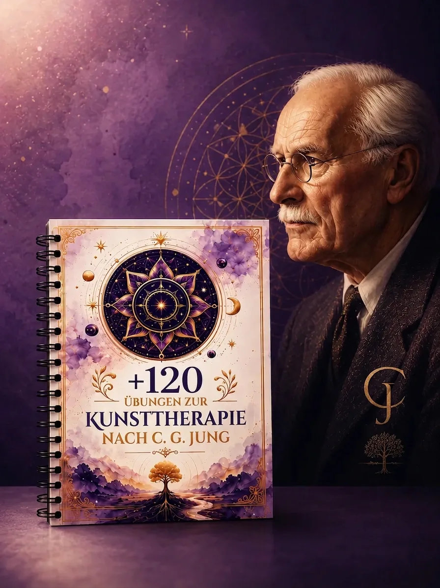
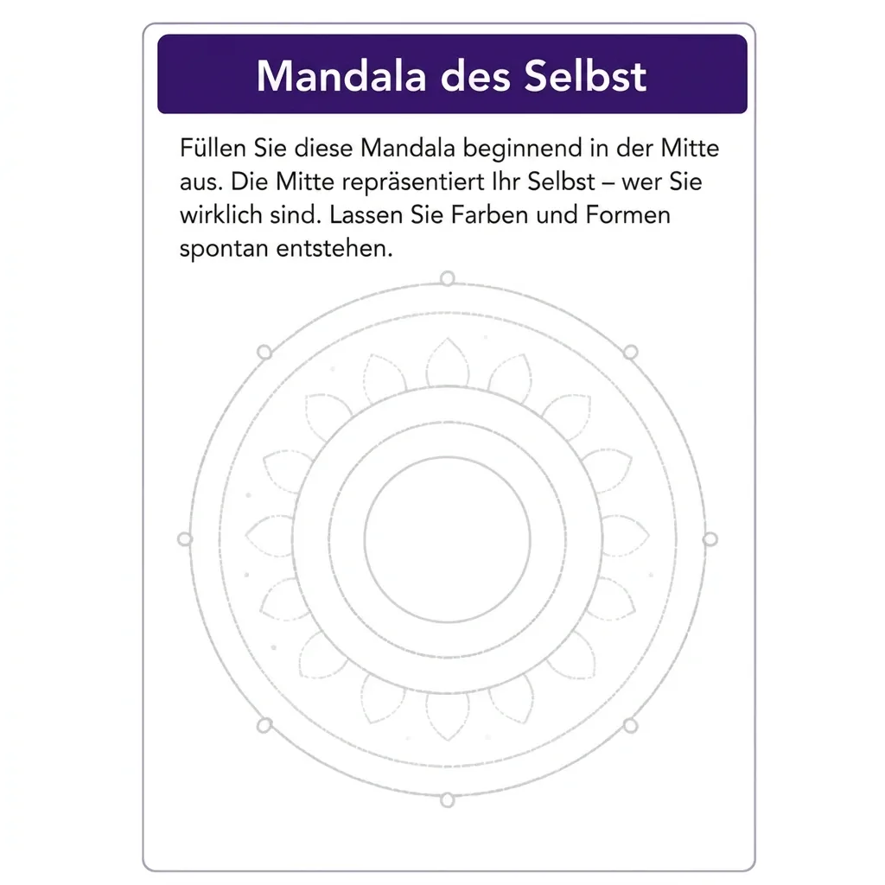
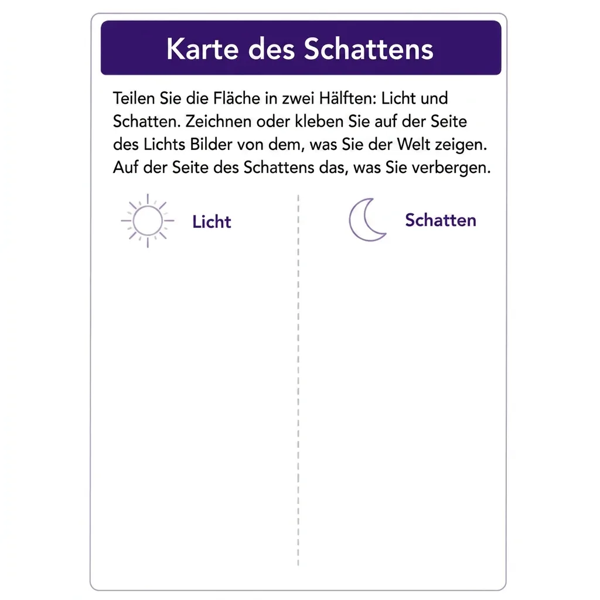
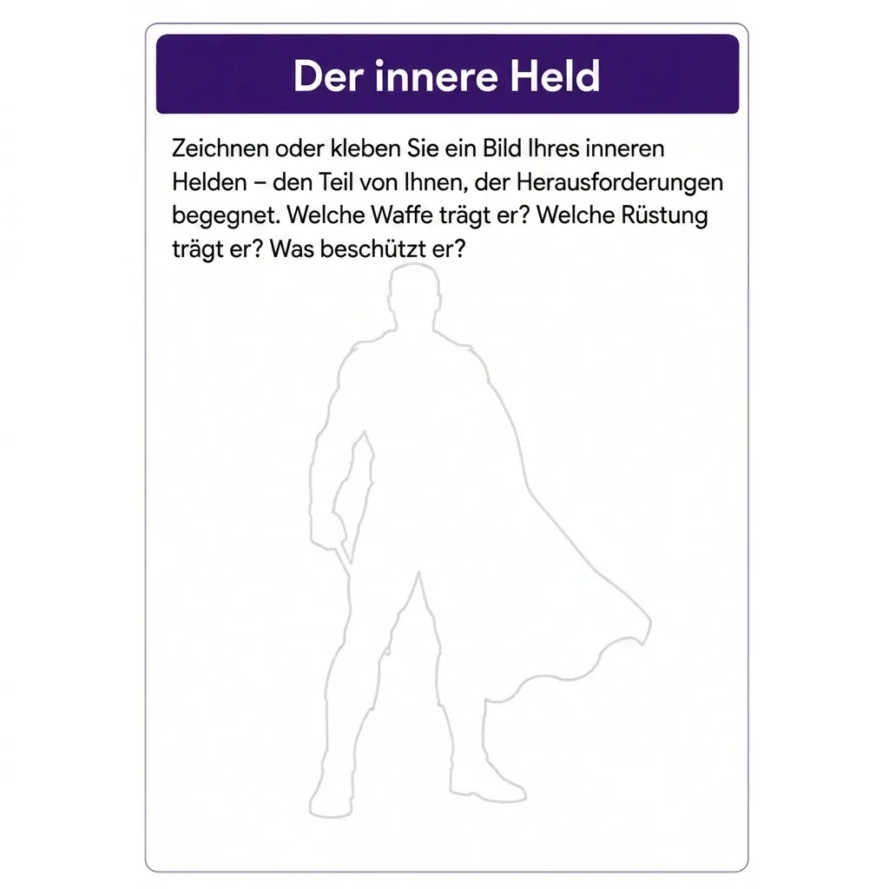
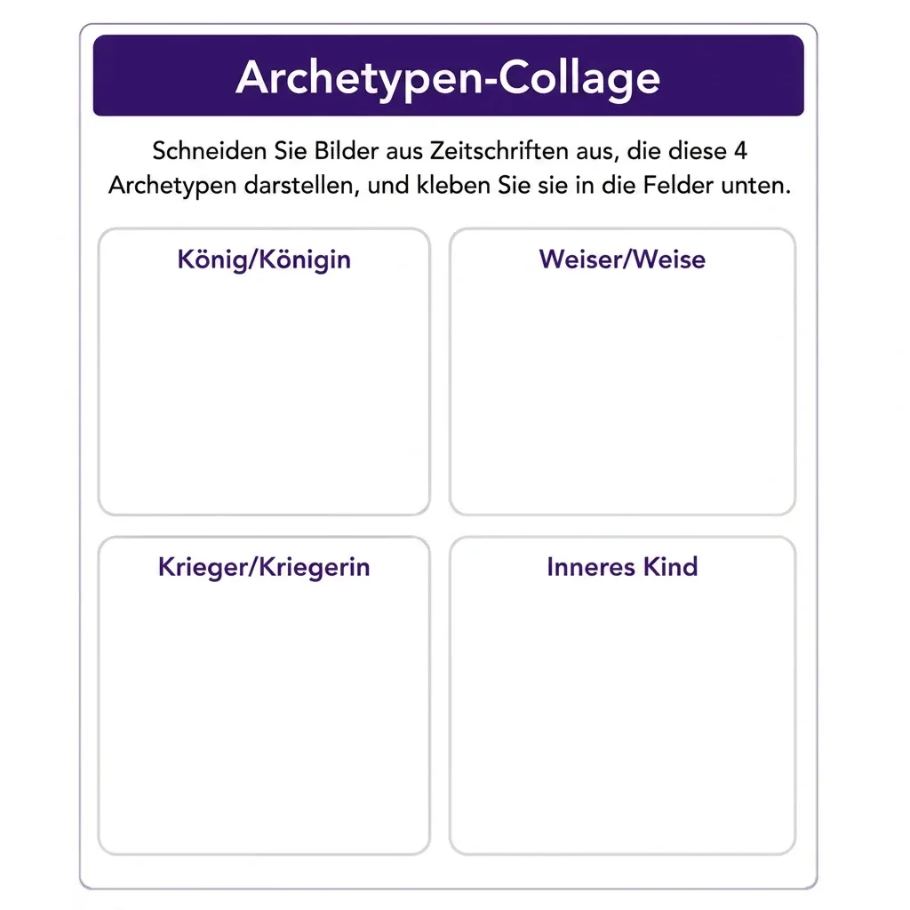
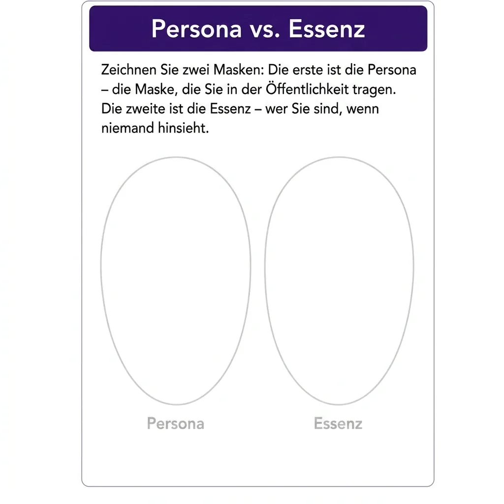
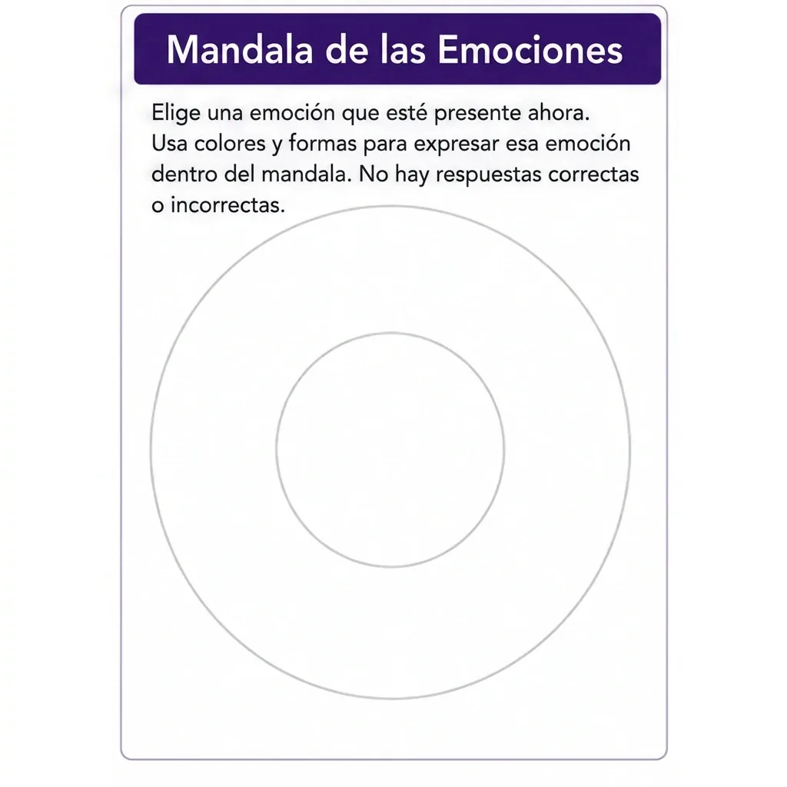
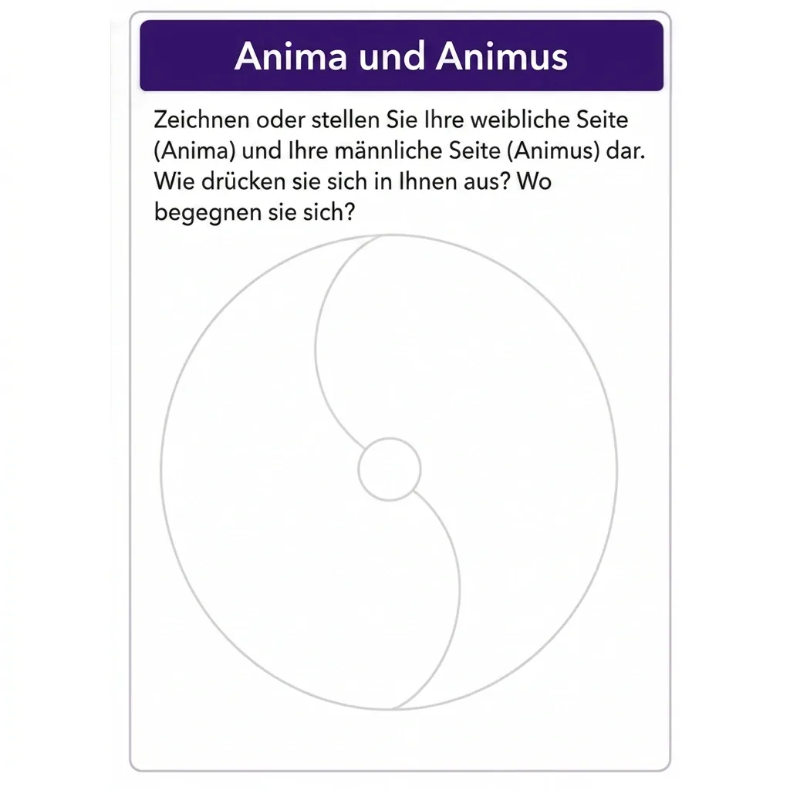
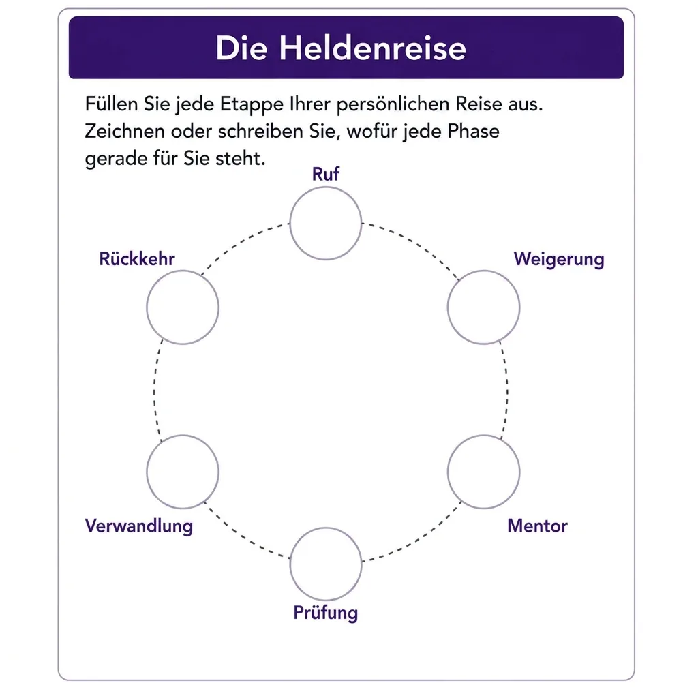
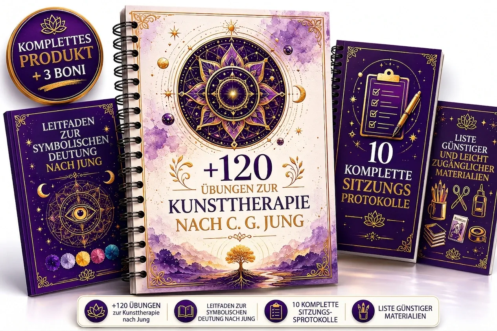

Über 120 kunsttherapeutische Übungen nach C. G. Jung – bereit für Ihre nächste Sitzung.
Der praxisnahe Leitfaden für Therapeutinnen, Psychologen, Heilpraktiker, Pädagogen und Coaches, die über das Gespräch hinausgehen möchten. Jede Übung mit klarer Schritt-für-Schritt-Anleitung und symbolischem Deutungsleitfaden – ohne Weiterbildung, ohne Studium, ohne Zeichentalent.

Ein Werkzeugkasten, den Sie sofort in der Praxis einsetzen.








Visuelle Schritt-für-Schritt-Anleitung zu jeder Übung – nachvollziehbar aufbereitet, damit Sie ohne lange Vorbereitung direkt in die Sitzung gehen können.
Nach Zielsetzung geordnet: Selbsterkenntnis, emotionaler Ausdruck, Schattenintegration und Arbeit mit Archetypen – so finden Sie in Sekunden die passende Übung.
Symbolischer Deutungsleitfaden inklusive: Hinweise, wie sich Farben, Formen und Motive im Sinne der analytischen Psychologie lesen lassen – als Orientierung für Ihre fachliche Einschätzung.
Für jedes Setting geeignet: Einzelarbeit, Gruppe, Unterricht oder ganzheitliche Begleitung – flexibel an Ihr Klientel anpassbar.
Warum Kunst in der Praxis einen Zugang eröffnet, den Worte allein selten finden.
Klienten öffnen sich auf neue Weise. Der bildnerische Ausdruck erreicht innere Ebenen, die das reine Gespräch oft nur schwer zugänglich macht – ein zusätzlicher Zugang für Ihre Arbeit.
Über 120 sofort einsatzbereite Übungen – kein wochenlanges Konzipieren mehr, sondern fertige Impulse für die nächste Sitzung.
Jede Übung mit symbolischem Deutungsleitfaden, damit Sie das Entstandene fundiert im jungianischen Rahmen einordnen können.
Kein künstlerisches Talent erforderlich – weder bei Ihnen noch bei Ihren Klienten. Es geht um Prozess und Ausdruck, nicht um schöne Bilder.
Heben Sie sich von Kolleginnen und Kollegen ab, indem Sie Ihr Angebot um eine kreative, tiefenpsychologisch fundierte Methode erweitern.
Vielseitig einsetzbar – vom klinischen Setting über die pädagogische Arbeit bis zur ganzheitlichen Begleitung.
Sofortiger Zugang per E-Mail – Sie können bereits in wenigen Minuten mit der ersten Übung beginnen.
Weiterbildung, Online-Kurs oder dieser Leitfaden – der ehrliche Vergleich.
Dieser Leitfaden ist für Sie, wenn …
Sie Therapeutin, Psychologe oder Coach sind und Ihren Klienten über das Gespräch hinaus einen weiteren Zugang anbieten möchten.
Sie als Pädagogin oder Pädagoge kreative, wirksame Werkzeuge für Ihre Gruppen- und Bildungsarbeit suchen.
Sie ganzheitlich arbeiten und die Tiefe der analytischen Psychologie C. G. Jungs mit dem Ausdruck der Kunst verbinden möchten.
Sie bisher dachten, Kunsttherapie sei «zu komplex» oder setze ein eigenes Studium voraus – und einen praxisnahen Einstieg suchen.
Sie von sich sagen: «Ich kann nicht zeichnen» – und trotzdem mit bildnerischen Methoden arbeiten möchten.
Sie diese Übungen auch für Ihre eigene Selbsterkenntnis und persönliche Entwicklung nutzen möchten.
Sechs Übungswelten aus der analytischen Psychologie.

120+ kunsttherapeutische Übungen nach C. G. JungDer Praxis-Leitfaden Für Fachkräfte
Jungianische Mandalas
Arbeit mit dem Mandala als Ausdruck von Individuation und der Annäherung an das Selbst – strukturgebend und zentrierend.
Intuitive Collage
Bildhafte Auseinandersetzung mit Schatten, Persona und Projektion – über das Zusammenfügen vorhandener Bilder, ganz ohne Zeichnen.
Archetypen zeichnen
Gestaltende Annäherung an zentrale Archetypen: Anima und Animus, den Helden, die Große Mutter, den Alten Weisen.
Schattenübungen
Übungen zur bildnerischen Auseinandersetzung mit dem Schatten – dem verdrängten, unbewussten Anteil der Persönlichkeit.
Heldenreise mit Kunst
Die Stationen der Heldenreise als kreativen roten Faden für längere Prozesse und Gruppenarbeit.
Freier emotionaler Ausdruck
Offene Formate, in denen Gefühle unmittelbar Form und Farbe finden – ohne Vorgabe, ohne Bewertung.
Jede Übung enthält:
- Das jungianische Ziel der Übung (klar benannt).
- Eine Materialliste (schlicht und kostengünstig).
- Eine Schritt-für-Schritt-Anleitung.
- Reflexionsfragen zur Begleitung.
- Eine Variante für Einzel- und Gruppensetting.
Fünf Boni, die Sie kostenlos dazu erhalten.

Leitfaden zur symbolischen Deutung
Ein kompaktes Nachschlagewerk zu Farben, Formen und wiederkehrenden Motiven im Sinne der analytischen Psychologie.
Wert: 39 €Kostenlos enthalten

10 komplette Sitzungsprotokolle
Ausgearbeitete Ablaufpläne für ganze Sitzungen – vom Einstieg bis zur Abschlussreflexion, direkt übernehmbar.
Wert: 34 €Kostenlos enthalten

Liste kostengünstiger Materialien
Eine übersichtliche Bezugsliste preiswerter Materialien, damit Sie ohne große Investition sofort loslegen können.
Wert: 14 €Kostenlos enthalten

50 Reflexionsfragen nach Archetyp
Sorgfältig formulierte Fragen, geordnet nach Archetyp, für eine gezielte Begleitung der Reflexion.
Wert: 24 €Kostenlos enthalten

Set mit 20 druckbaren Mandalas (HD)
Zwanzig hochauflösende, sofort druckbare Mandala-Vorlagen für den direkten Einsatz.
Wert: 19 €Kostenlos enthalten

Wer diesen Leitfaden erstellt hat
Rosana Neves
Rosana Neves — Expertin für jungianische Kunsttherapie. Sie beschäftigt sich seit vielen Jahren mit der Verbindung von analytischer Psychologie nach C. G. Jung und künstlerischem Ausdruck.
Mit diesem Leitfaden hat sie langjähriges Fachwissen in praktische, unmittelbar anwendbare Übungen übersetzt – aufbereitet für den Alltag in der Praxis, im Unterricht und in der Begleitung.
Ihr Anliegen: fundierte Kunsttherapie zugänglich machen, auch für Fachkräfte ohne künstlerische Vorbildung und ohne Zeichentalent.
Das erhalten Sie heute:
Alles, was Sie beim Kauf jetzt erhalten
- Hauptleitfaden mit über 120 kunsttherapeutischen Übungen97 €
Mandalas, Schatten, Archetypen, Individuation und mehr – bereit für Ihre nächste Sitzung, ohne Zeichentalent.
- Bonus 1 – Leitfaden zur symbolischen Deutung39 €
Ein kompaktes Nachschlagewerk zu Farben, Formen und wiederkehrenden Motiven.
- Bonus 2 – 10 komplette Sitzungsprotokolle34 €
Ausgearbeitete Ablaufpläne für ganze Sitzungen – direkt übernehmbar.
- Bonus 3 – Liste kostengünstiger Materialien14 €
Eine Bezugsliste preiswerter Materialien, damit Sie sofort loslegen können.
- Bonus 4 – 50 Reflexionsfragen nach Archetyp24 €
Sorgfältig formulierte Fragen, geordnet nach Archetyp.
- Bonus 5 – 20 druckbare Mandalas (HD)19 €
Zwanzig hochauflösende, sofort druckbare Mandala-Vorlagen.
- Lebenslanger Zugang inkl. aller künftigen Updatesinklusive
Erhalten Sie alle künftigen Versionen und neuen Übungen ohne Zusatzkosten. Einmal zahlen, dauerhaft nutzen.
- E-Mail-Support bei Frageninklusive
Fragen zur Anwendung? Schreiben Sie mir direkt – ich antworte persönlich, damit Sie das Material in die Praxis bringen.
- Gesamtwert:227 €
statt 227 €
für nur
19 €
· einmalige Zahlung
Einmalige Zahlung. Sofortiger und lebenslanger Zugang. Keine Abo-Kosten.
⏳ Aktionspreis – nur für kurze Zeit
Dieser Leitfaden ist regulär für 227 € kalkuliert. Wir behalten uns vor, den Preis jederzeit anzuheben – sichern Sie sich den Vorteil, solange dieses Angebot sichtbar ist.
Sichere und geprüfte Zahlung per PayPal · Kauf auf Rechnung (Klarna) · SEPA-Lastschrift · Kreditkarte. Nach dem Kauf erhalten Sie Ihren Zugang automatisch per E-Mail.

Kein Risiko für Sie
🛡️ 30 Tage Geld-zurück-Garantie
Sehen Sie sich den gesamten Leitfaden in Ruhe an und testen Sie die Übungen in Ihrer Praxis. Wenn Sie innerhalb von 30 Tagen zu dem Schluss kommen, dass das Material nicht das Richtige für Sie ist, schreiben Sie uns eine kurze E-Mail – Sie erhalten 100 % Ihres Kaufpreises zurück, ohne Bürokratie und ohne Begründung. Das bereits heruntergeladene Material dürfen Sie behalten.
Diese freiwillige Garantie geht bewusst über Ihr gesetzliches Widerrufsrecht hinaus.
In drei Schritten startklar.
Bestellen (unter 2 Minuten) – Wählen Sie Ihre Zahlungsart und schließen Sie den Kauf sicher ab.
Sofortiger Zugang per E-Mail – Unmittelbar nach der Zahlung erhalten Sie Ihren Zugang direkt in Ihr Postfach.
Öffnen, Übung wählen, anwenden – Suchen Sie die passende Übung aus und setzen Sie sie in Ihrer nächsten Sitzung ein.
Häufige Fragen
Nein. Weder Sie noch Ihre Klienten benötigen zeichnerisches Talent. Im Mittelpunkt stehen Prozess und Ausdruck, nicht das fertige Bild.
Nein. Der Leitfaden ist so aufgebaut, dass Sie ohne formale Zusatzausbildung damit arbeiten können. Er ergänzt Ihre bestehende fachliche Qualifikation.
Ja. Viele Übungen lassen sich sehr gut in der Bildungs- und Gruppenarbeit einsetzen.
Ja. Die Übungen verbinden tiefenpsychologische Grundlagen mit kreativem Ausdruck.
Nein. Die Übungen kommen mit einfachen, kostengünstigen Materialien aus – eine Bezugsliste ist als Bonus enthalten.
Digital und sofort: Direkt nach dem Kauf bekommen Sie Ihren Zugang per E-Mail – mit lebenslangem Zugriff inklusive Updates.
Dann erhalten Sie innerhalb von 30 Tagen 100 % Ihres Kaufpreises zurück – ohne Begründung und ohne Bürokratie.
Ja. Viele Nutzerinnen und Nutzer setzen die Übungen auch für ihre persönliche Entwicklung und Selbstreflexion ein.
Über 120 einsatzbereite Übungen – bereit für Ihre Sitzung schon morgen. Ohne Weiterbildung, ohne Studium, ohne Zeichentalent.
Sofortiger Zugang · einmalige Zahlung · 30 Tage Geld-zurück-Garantie. Heute für nur 19 € statt 227 €.